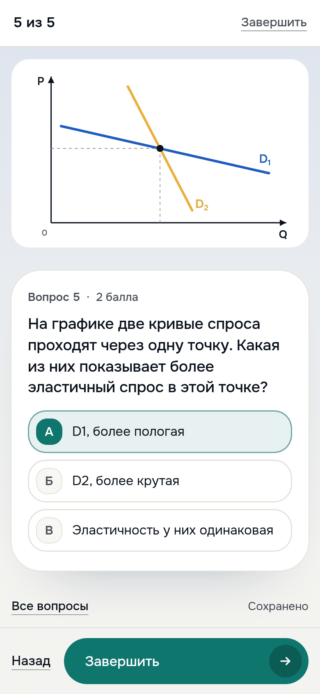
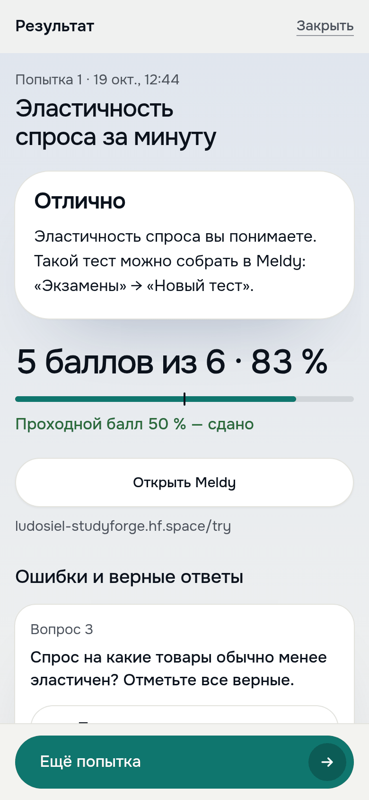

Представление блоков проекта
Пройдите этот тест с телефона.
Аккаунт не нужен, результат сразу
Аккаунт не нужен, результат сразу
ludosiel-studyforge.hf.space
/k/kb0dxmwb21fb
/k/kb0dxmwb21fb
1
Наведите камеру
2
5 вопросов,
около минуты
около минуты
3
Балл, ошибки
и пояснения
и пояснения
Автор видит каждую
попытку сразу:
попытку сразу:
кто пишет, балл, время,
трудные вопросы, CSV
трудные вопросы, CSV
Автор может предложить
тренировать вопросы в Meldy
тренировать вопросы в Meldy


Этот тест можно пройти прямо сейчас. Наведите камеру на код: откроется настоящий тест «Эластичность спроса за минуту», вход не нужен. Пять вопросов, около минуты. После «Завершить» вы сразу увидите балл, свои ошибки и пояснения к ним, а автор теста — вашу попытку на своей странице: кто пишет, балл, время, какие вопросы оказались самыми трудными, и таблицу для Excel. Этот тест собран в студии с прошлого слайда: у пятого вопроса свой график, у результата три сообщения по баллам. Если спросят: тест открыт всем по ссылке без аккаунта, без ограничения времени, попыток сколько угодно; имя участник пишет любое. После закрытия контрольной Meldy предлагает участникам тренировать её вопросы в своём аккаунте. Тестовые вопросы проверяются без ИИ, поэтому участники ничего не стоят. Адрес: ludosiel-studyforge.hf.space/k/kb0dxmwb21fb